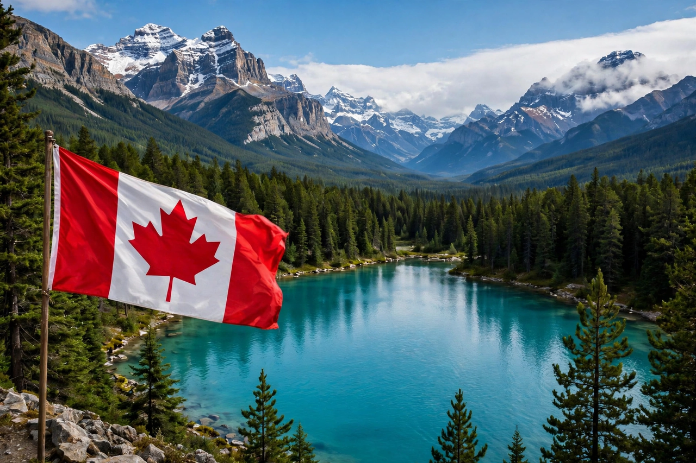

Canada is a country in North America, stretching from the Atlantic to the Pacific and north to the Arctic Ocean. It is the world's second-largest country by total area.
Indigenous peoples, part of the wider Indigenous peoples of the Americas, inhabited Canada for millennia. French and British colonisation from the 16th century, driven partly by the fur trade around the Great Lakes, led to Confederation in 1867. Canada gained full legislative independence with the Constitution Act, 1982.
Canada has ten provinces and three territories, vast boreal forests, prairies, the Rocky Mountains, and the Arctic Archipelago. Its population concentrates near the US border.
A federal parliamentary constitutional monarchy, Canada is bilingual, multicultural, and a member of the United Nations, NATO, G7 and Commonwealth.